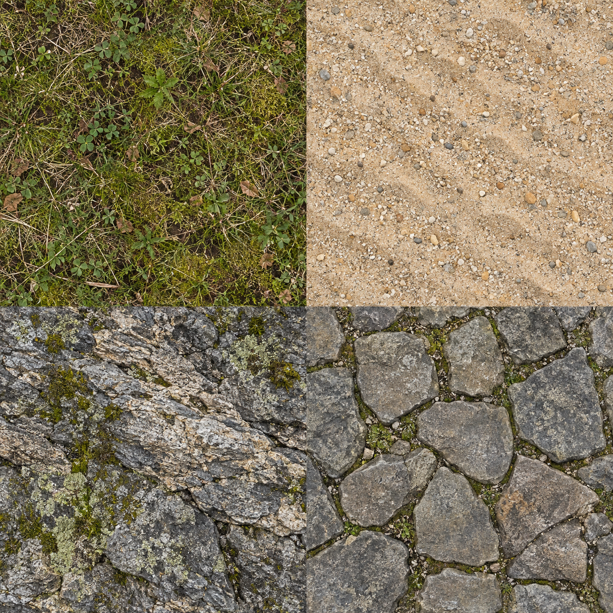

kitsune enginev2
A major visual upgrade with detailed surface textures, normal relief, richer foliage, a new fox model, terrain-aware water and cinematic post effects. Includes the complete offline engine, editable source and two playable examples.
Open Spirit Isle →Try the demo
- Extract this ZIP first. Open spirit-isle.html in a full browser with WebGL enabled.
- Tap Enter Spirit Isle. On a phone, use the left joystick, drag the scene to look, pinch with two fingers on the scene to zoom, and tap Jump.
- On a computer, use WASD or arrows, drag to look, Space to jump, Q/E to turn, and the mouse wheel to zoom.
- Find the five glowing spirit stones. Settings includes quality controls, Save, Load, and New run. Rain can be toggled from the top corner.
No account, API key, server, or runtime network request is required. Some mobile file-preview apps do not execute HTML games; use a full browser. Saves are local to that browser and file origin.
What changed visually
| Area | Verdant edition |
|---|---|
| Surfaces | Generated grass, sand, rock and paver textures; procedural bark, roof and fur; height-blended terrain and normal relief. |
| Lighting | Standard materials, sky environment lighting, soft sun shadows, local depth occlusion and a hero contact shadow. |
| Post effects | Half-float HDR bloom on supported GPUs, filmic output, FXAA with depth occlusion, and an automatic LDR fallback. |
| Woodland | Branching trees, layered canopies, leaf cards, ferns, flower patches, textured shoreline rocks and stepping stones. |
| Architecture | Curved shrine roof, ridge caps, rafters, lattice walls, torii details and stone lanterns. |
| Fox | Rounded anatomy, fur detail, inner ears, eyes, whiskers, articulated legs, paws and a curved moving tail. |
| Water | Moving geometry, shallow-water tint, glints, Fresnel color and foam based on sampled terrain height. |
| Scene organization | 217 static scenery meshes merged into 24 spatial batches; repeated vegetation uses instancing. This is a draw-call reduction, not an FPS benchmark. |
Fixed-step simulation, touch controls, saves, audio, particles, grid navigation and the original v2 gameplay systems remain included.
Material atlas

These are the embedded source textures, not a screenshot of the game. The complete scene is in the playable demo.
Use the source
The source folder contains the engine, the editable starter, Three.js r128, tests, and detailed references. The kitsune-enginev2.skill file is the upgraded skill package for use in compatible skill tools.
python3 source/scripts/build.py source/assets/starter.html my-game.html
node source/scripts/test_core.cjs
python3 source/scripts/test_build.pyStart with runtime-api.md, rendering.md, and integration.md. Keep game-specific logic in your HTML; use the engine for reusable systems.
Validation
Passed: 22 core checks, 5 builder checks, 13 navigation checks, 17 visual-resource checks, and additional CPU scene/input/resource integration checks. Eight shader program variants compiled and linked through native Mesa OpenGL ES, including terrain, shadows, environment lighting, wind, water and post effects.
Full browser rendering, touchscreen usability and device frame rate have not been verified. Native shader compilation and CPU simulation do not validate a complete browser frame. No UE5 equivalence or performance multiplier is claimed.
The source references describe exact supported behavior. This is a custom browser runtime with height-field actor physics and grid navigation. The package does not implement Nanite, Lumen, hardware ray tracing or a visual editor.
Three.js and the original engine's MIT attribution are preserved in THIRD_PARTY_LICENSES.txt.